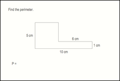

Beginning Algebra
Beginning Algebra
Welcome to the Algebra2go beginning algebra resources page. Whether you are attending Saddleback College's beginning algebra class (math 251), taking a beginning algebra class at another school, or need to refresh your math skills for a business or science class, we have tools that can help you. At this time we can offer three types of study materials: class notes, video lectures, and video worksheets. Whichever materials you decide to use, we would appreciate your feedback. Please let Professor Perez know what you liked and didn't like about these materials by sending him an e-mail.
Video Lectures
Perhaps our most popular tools are the video lectures. Attend Professor Perez's lecture alongside his favorite student, Charlie. Each lecture focuses on a particular skill set which is vital for success in beginning algebra. The videos are available in three formats.
Windows Streaming Media: These are .wmv videos. If your computer doesn't already play this format, you can download the free Windows Media Player to watch them.
YouTube: These are flash videos. They are lower quality than the windows streaming media videos, but YouTube videos can be played on a wider range of platforms including the iPhone and Wii. Since YouTube limits the length of video clips, some of the videos have been split into multiple parts.
TeacherTube: These are flash videos similar to the YouTube versions, but TeacherTube videos are better quality and do not need to be split into multiple parts.
Video Worksheets
Every video is accompanied by a worksheet that mirrors the presentation so that you can work along with Charlie during the video. This kind of active learning process is a particularly good way to increase retention. The worksheets are saved in the .pdf format. If your computer doesn't already read these files, you can download the free Adobe Acrobat Reader.
Class Notes
Charlie isn't the best note-taker, but fortunately for him (and for us), his friend Candice is. She has loaned her comprehensive, hand-written notes on every lecture to Charlie and you can see them here. The notes are saved in the .pdf format. If your computer doesn't already read these files, you can download the free Adobe Acrobat Reader.

| Prealgebra Review |
| Topics | Lecture Notes |
Video Worksheets |
Video Formats | ||
| WMV | TeacherTube | YouTube | |||
| Fractions | read | read | play | part 1 part 2 part 3 | |
| Pre-algebra Review Exam #1 | Exam 1 | part 1 part 2 | part 1 part 2 part 3 | ||
| Pre-algebra Review Exam #2 | Exam 2 | part 1 part 2 part 3 | part 1 part 2 part 3 | ||


| The Real Number System and Variables |
| Topics | Lecture Notes |
Video Worksheets |
Video Formats | ||
| WMV | TeacherTube | YouTube | |||
| Exponents | read | ||||
| Order of Operations | read | ||||
| Inequalities | read | ||||
| Variables, Expressions, and Equations | read | ||||
| Classifying Real Numbers | read | ||||
| Opposite and Absolute Value | read | ||||
| Addition and Subtraction | read | ||||
| Multiplication and Division | read | ||||
| Properties of Real Numbers | read | ||||
| Simplifying Expressions | read | ||||
| Combining Like Terms | read | play | |||

| Linear Equations in One Variable |
| Topics | Lecture Notes |
Video Worksheets |
Video Formats | ||
| WMV | TeacherTube | YouTube | |||
| Solving Equations: Part I | read | read | play | play | |
| Solving Equations: Part II | read | read | play | play | |
| Solving Equations: Part III | read | read | play | play | |
| Applications: Integer Problems | read | ||||
| Applications: Geometry Problems | read | ||||
| Ratios and Proportions | read | ||||
| Applications: Mixture Problems | read | read | play | ||
| Applications: Coin Problems | read | read | play | part 1 part 2 | |

| Cumulative Review #1 |
| Topics | Practice Exam |
| Practice Exam #1 | Exam 1 |

| Linear Equations and Inequalities in Two Variables |
| Topics | Lecture Notes |
Video Worksheets |
Video Formats | ||
| WMV | TeacherTube | YouTube | |||
| Introduction to Linear Equations in Two Variables | read | ||||
| Graphing Linear Equations in Two Variables | read | read | play | play | part 1 part 2 |
| The Slope of a Line | read | read | play | play | |
| Equations of a Line | read | part 1 part 2 | part 1 part 2 | play | play |
| Linear Inequalities | read | ||||

| Systems of Linear Equations and Inequalities |
| Topics | Lecture Notes |
Video Worksheets |
Video Formats | ||
| WMV | TeacherTube | YouTube | |||
| Solving Systems of Equations by Graphing | read | ||||
| Solving Systems of Equations by Substitution | read | ||||
| Solving Systems of Equations by Elimination | read | read | play | play | |
| Applications: Coin and Mixture Problems | part 1 part 2 | read | play | play | |
| Applications: Distance | read | ||||
| Solving Systems of Linear Inequalities | read | ||||

| Cumulative Review #2 |
| Topics | Practice Exam |
| Practice Exam #1 | Exam 2 |

| Polynomials |
| Topics | Lecture Notes |
Video Worksheets |
Video Formats | ||
| WMV | TeacherTube | YouTube | |||
| Power and Product Rules for Exponents | read | ||||
| Integer Exponents and the Quotient Rule | read | read | play | play | part 1 part 2 part 3 |
| Scientific Notation: Part I | read | play | play | play | |
| Scientific Notation: Part II | read | play | play | play | |
| Adding and Subtracting Polynomials | read | ||||
| Multiplying Polynomials | read | read | play | play | |
| Special Products | read | ||||
| Introduction to Factoring | read | read | play | play | |
| Factoring by Grouping | read | read | play | play | part 1 part 2 |
| Factoring Trinomials | read | read | play | play | part 1 part 2 |
| Special Factoring Rules | read | ||||
| Solving Quadratic Equations by Factoring | read | ||||
| Applied Quadratic equations: Geometry Problems | read | ||||
| Applied Quadratic equations: Integer Problems | read | ||||

| Cumulative Review #3 |
| Topics | Practice Exam |
| Practice Exam #1 | Exam 3 |

| Rational Expressions |
| Topics | Lecture Notes |
Video Worksheets |
Video Formats | ||
| WMV | TeacherTube | YouTube | |||
| Introduction to Rational Expressions | read | ||||
| Simplifying Rational Expressions | read | read | play | play | |
| Multiplying and Dividing Rational Expressions | read | ||||
| Finding the LCD of Rational Expressions | read | ||||
| Adding and Subtracting Rational Expressions | read | ||||
| Simplifying Complex Fractions | read | read | play | play | |
| Solving Equations with Rational Expressions | read | read | play | play | |
| Extraneous Solutions: Rational Expressions | read | ||||
| Applications: Work Problems | read | read | play | play | play |
| Applications: Distance Problems | read | ||||
| Variation | read | ||||


| Cumulative Review #4 |
| Topics | Practice Exam |
| Practice Exam #1 | Exam 4 |
| Radical Expressions |
| Topics | Lecture Notes |
Video Worksheets |
Video Formats | ||
| WMV | TeacherTube | YouTube | |||
| Evaluating Roots | read | ||||
| Simplifying Radicals | read | part 1 part 2 | part 1 part 2 | part 1 part 2 | |
| Adding or Subtracting Radicals | read | ||||
| Multiplying Radicals and Rationalizing Denominators | part 1 part 2 part 3 | part 1 part 2 | part 1 part 2 | part 1 part 2 | |
| Solving Equations with Radicals | part 1 part 2 | ||||
| Extraneous Solutions: Radical Equations | read | ||||
| Rational Exponents | read | ||||

| Quadratic Expressions |
| Topics | Lecture Notes |
Video Worksheets |
Video Formats | ||
| WMV | TeacherTube | YouTube | |||
| The Square Root Property | read | ||||
| Completing the Square | read | read | play | play | |
| The Quadratic Formula | read | ||||

| Cumulative Review #5 |
| Topics | Practice Exam |
| Practice Exam #1 | Exam 5 |